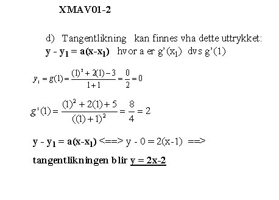

 Solsiden har helt sikkert mer enn bare tre uteplasser, men det er vanskelig å finne noe nyttig informasjon om de på nettet :S.
Blæst er en av Trondheims beste og viktigste konsertscener. Lokalene ligger i det gamle ærverdige Trondheim mek. verksted på Nedre Elvehavn/ Solsiden. Med knappe 600m2 fordelt på to etasjer, inkludert uteservering, er Blæst i tillegg et av byens desidert beste utelivsalternativ – både på høylys dag og når mørket faller på.
Ekte burgere grillet på kullgrill med leskende drikke fra lokale og fjerne bryggerier.
Bare blåbær as ligger på Solsiden på Nedre Elvehavn. Bare Blåbær as består av Cafè bare blåbær og bær&bar i Parkbygget, samt Bar Passiar som ligger i Dokkhuset.
Cafè bare blåbær er stedet med et mangfold utenom det vanlige. Cafèen har et særegent og pulserende miljø. Miksen av moderne stil og folkelig sjarm har blitt et begrep. Dette er et treffsted for alle og til alle døgnets tider. Cafè bare blåbær er et spisested med en variert og spennende meny, og cafèen har vedfyrte pizzaovn.
bær&bar vegg i vegg spesialiserer seg på kaffe- og juicedrikker på dagtid og har mer pub-/barstemning på kveldstid. Dette er stedet for naboer og stamgjester. Mer intimt, litt mer avslappende miljø og med større utvalg i drikke enn i cafèen. Serverer samme maten som i cafèen, men har eget kjøkken og selskapsmeny ved selskaper på opp til 70 personer.
Bare Blåbær as har overtatt serveringsstedet på Dokkhuset og Bar Passiar er født. Dokkhuset har en flott cafe/bar/restaurant og en meget spennende konsertscene. Her er det nesten daglig konserter, konferanser, events og selskaper på opp til 350 pers. Kjøkkenet er variert med ordinær ala carte meny, buffetservering, tapas og selskapsservering.